ProgrTest WDA96160 96162
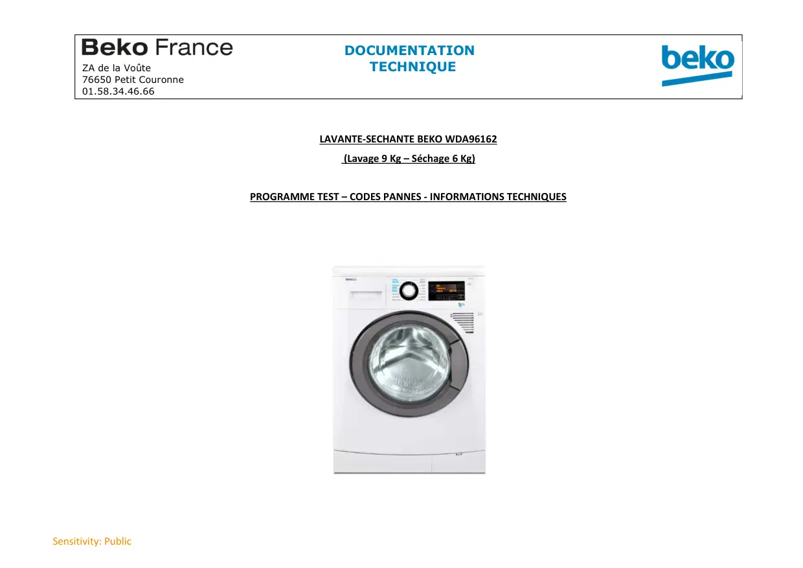
Sensitivity: PublicLAVANTE-SECHANTE BEKO WDA96162(Lavage 9 Kg – Séchage 6 Kg)PROGRAMME TEST – CODES PANNES - INFORMATIONS TECHNIQUESDOCUMENTATIONZA de la Voûte TECHNIQUE76650 Petit Couronne01.58.34.46.66
1 / 20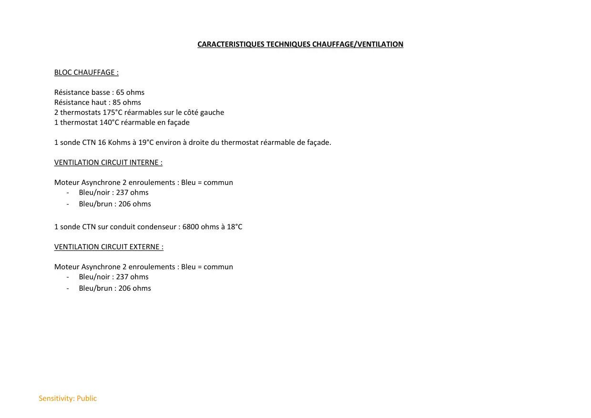
Sensitivity: PublicCARACTERISTIQUES TECHNIQUES CHAUFFAGE/VENTILATIONBLOC CHAUFFAGE :Résistance basse : 65 ohmsRésistance haut : 85 ohms2 thermostats 175°C réarmables sur le côté gauche1 thermostat 140°C réarmable en façade1 sonde CTN 16 Kohms à 19°C environ à droite du thermostat réarmable de façade.VENTILATION CIRCUIT INTERNE :Moteur Asynchrone 2 enroulements : Bleu = commun-Bleu/noir : 237 ohms-Bleu/brun : 206 ohms1 sonde CTN sur conduit condenseur : 6800 ohms à 18°CVENTILATION CIRCUIT EXTERNE :Moteur Asynchrone 2 enroulements : Bleu = commun-Bleu/noir : 237 ohms-Bleu/brun : 206 ohms
2 / 20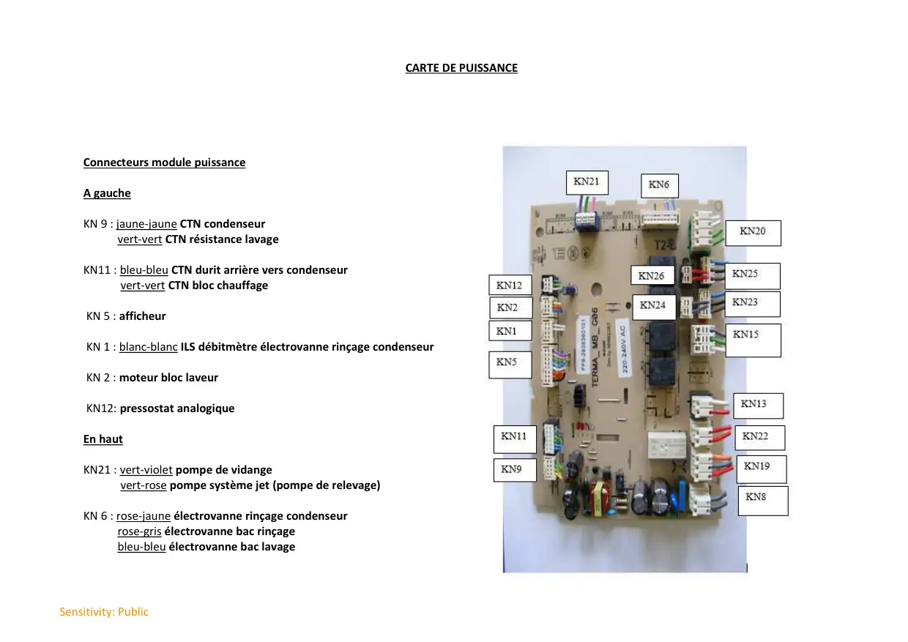
Sensitivity: PublicCARTE DE PUISSANCEConnecteurs module puissanceA gaucheKN 9 : jaune-jaune CTN condenseurvert-vert CTN résistance lavageKN11 : bleu-bleu CTN durit arrière vers condenseurvert-vert CTN bloc chauffageKN 5 : afficheurKN 1 : blanc-blanc ILS débitmètre électrovanne rinçage condenseurKN 2 : moteur bloc laveurKN12: pressostat analogiqueEn hautKN21 : vert-violet pompe de vidangevert-rose pompe système jet (pompe de relevage)KN 6 : rose-jaune électrovanne rinçage condenseurrose-gris électrovanne bac rinçagebleu-bleu électrovanne bac lavage
3 / 20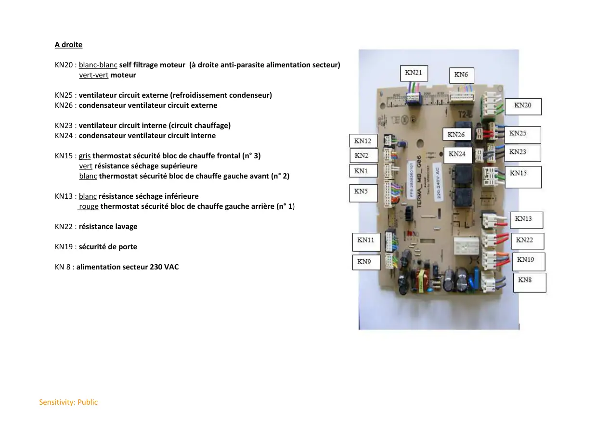
Sensitivity: PublicA droiteKN20 : blanc-blanc self filtrage moteur (à droite anti-parasite alimentation secteur)vert-vert moteurKN25 : ventilateur circuit externe (refroidissement condenseur)KN26 : condensateur ventilateur circuit externeKN23 : ventilateur circuit interne (circuit chauffage)KN24 : condensateur ventilateur circuit interneKN15 : gris thermostat sécurité bloc de chauffe frontal (n° 3)vert résistance séchage supérieureblanc thermostat sécurité bloc de chauffe gauche avant (n° 2)KN13 : blanc résistance séchage inférieurerouge thermostat sécurité bloc de chauffe gauche arrière (n° 1)KN22 : résistance lavageKN19 : sécurité de porteKN 8 : alimentation secteur 230 VAC
4 / 20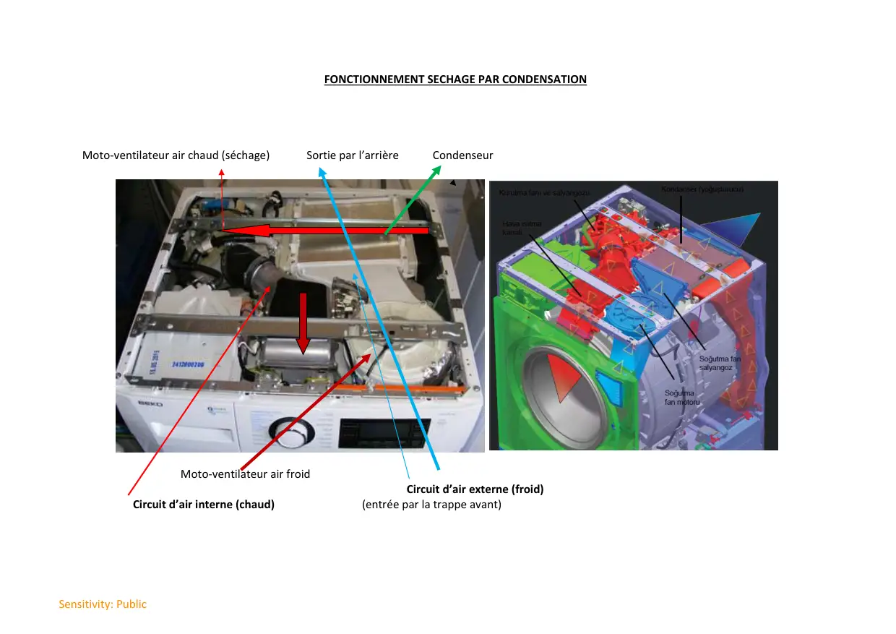
Sensitivity: PublicFONCTIONNEMENT SECHAGE PAR CONDENSATIONMoto-ventilateur air chaud (séchage) Sortie par l’arrière CondenseurMoto-ventilateur air froidCircuit d’air externe (froid)Circuit d’air interne (chaud) (entrée par la trappe avant)
5 / 20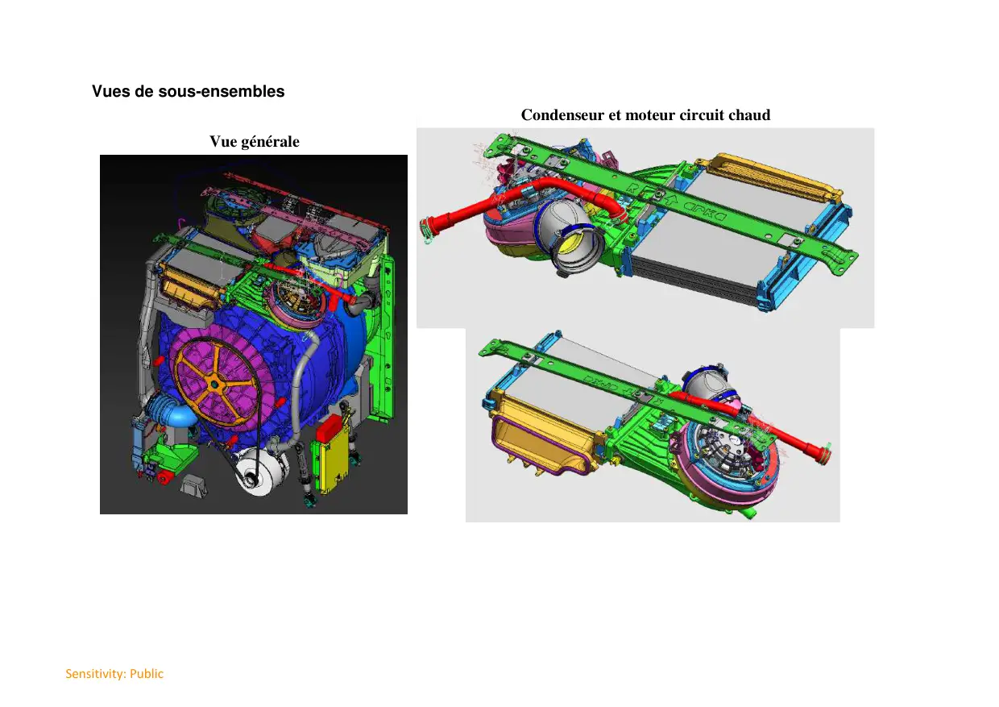
Sensitivity: PublicVues de sous-ensemblesCondenseur et moteur circuit chaudVue générale
6 / 20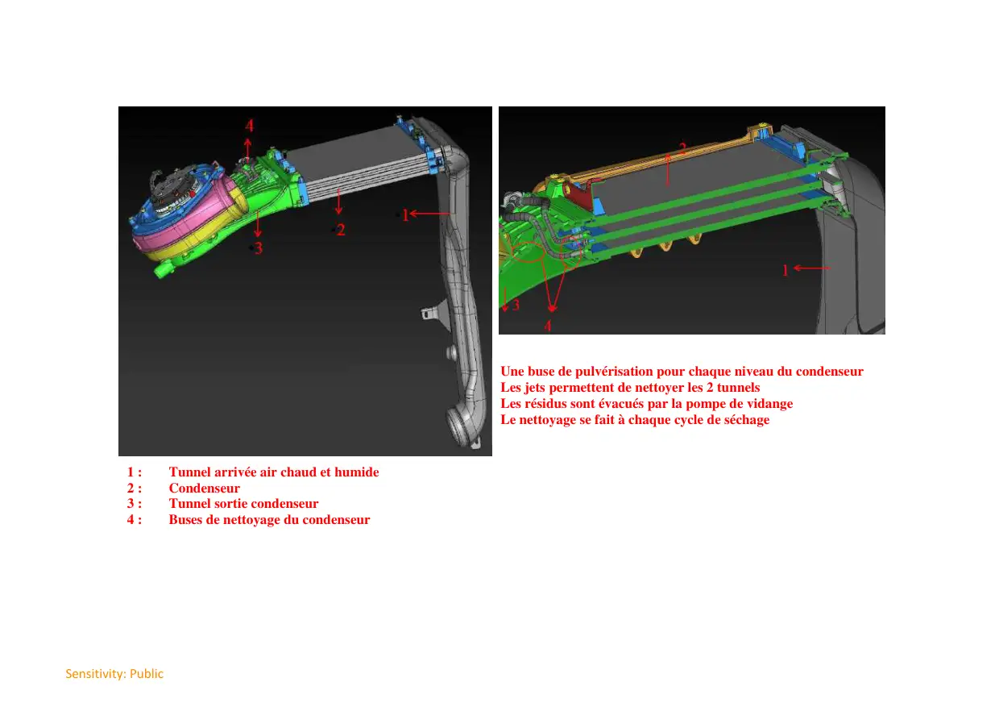
Sensitivity: Public1 :Tunnel arrivée air chaud et humide2 :Condenseur3 :Tunnel sortie condenseur4 :Buses de nettoyage du condenseurUne buse de pulvérisation pour chaque niveau du condenseurLes jets permettent de nettoyer les 2 tunnelsLes résidus sont évacués par la pompe de vidangeLe nettoyage se fait à chaque cycle de séchage
7 / 20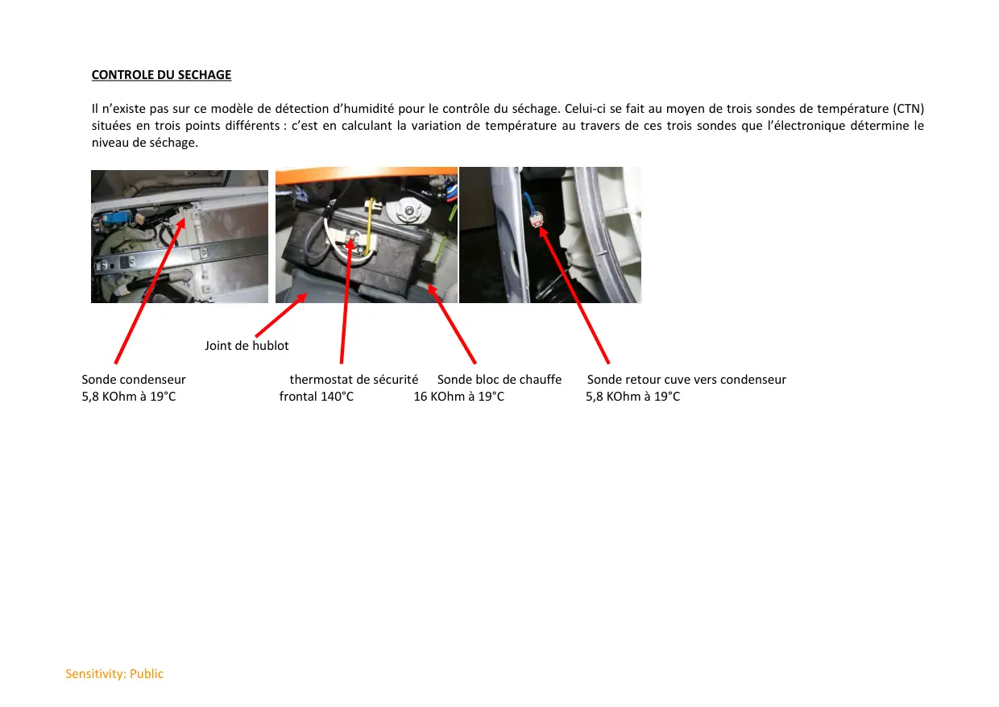
Sensitivity: PublicCONTROLE DU SECHAGEIl n’existe pas sur ce modèle de détection d’humidité pour le contrôle du séchage. Celui-ci se fait au moyen de trois sondes de température (CTN)situées en trois points différents : c’est en calculant la variation de température au travers de ces trois sondes que l’électronique détermine leniveau de séchage.Joint de hublotSonde condenseur thermostat de sécurité Sonde bloc de chauffe Sonde retour cuve vers condenseur5,8 KOhm à 19°C frontal 140°C 16 KOhm à 19°C 5,8 KOhm à 19°C
8 / 20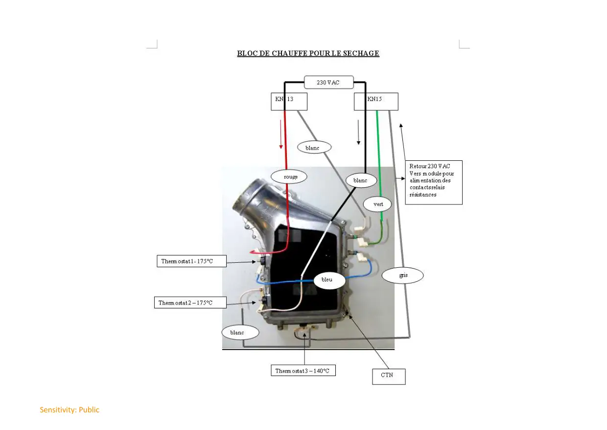
Sensitivity: Public
9 / 20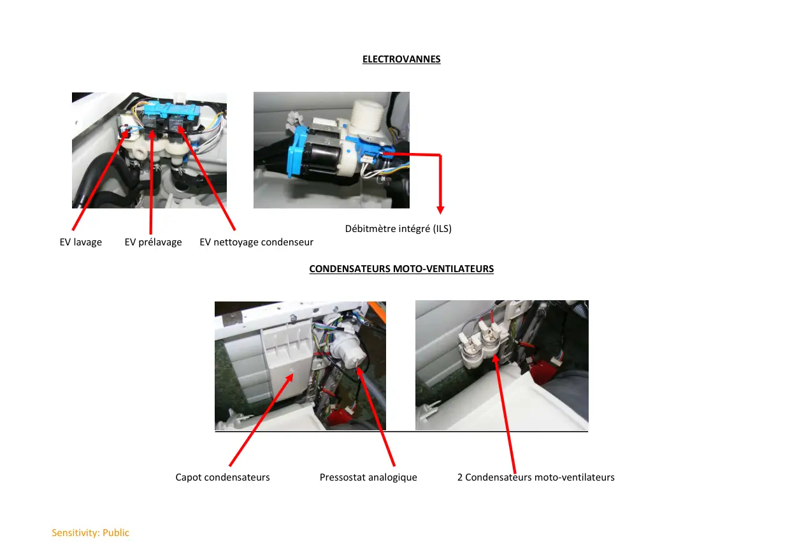
Sensitivity: PublicELECTROVANNESDébitmètre intégré (ILS)EV lavage EV prélavage EV nettoyage condenseurCONDENSATEURS MOTO-VENTILATEURSCapot condensateurs Pressostat analogique 2 Condensateurs moto-ventilateurs
10 / 20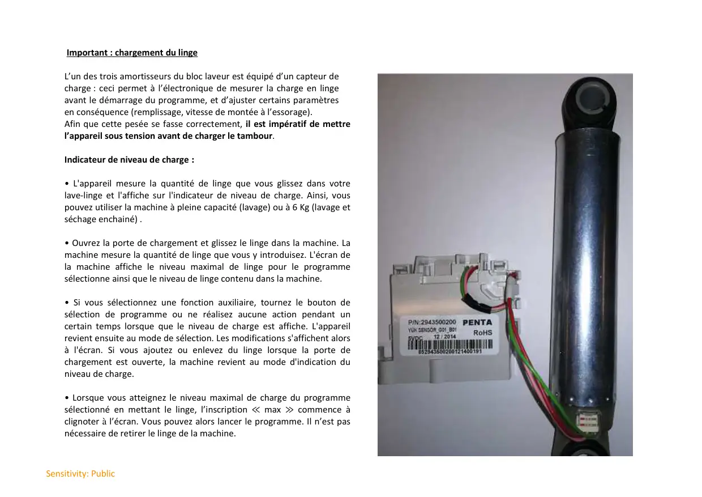
Sensitivity: PublicImportant : chargement du lingeL’un des trois amortisseurs du bloc laveur est équipé d’un capteur decharge : ceci permet à l’électronique de mesurer la charge en lingeavant le démarrage du programme, et d’ajuster certains paramètresen conséquence (remplissage, vitesse de montée à l’essorage).Afin que cette pesée se fasse correctement, il est impératif de mettrel’appareil sous tension avant de charger le tambour.Indicateur de niveau de charge :• L'appareil mesure la quantité de linge que vous glissez dans votrelave-linge et l'affiche sur l'indicateur de niveau de charge. Ainsi, vouspouvez utiliser la machine à pleine capacité (lavage) ou à 6 Kg (lavage etséchage enchainé) .• Ouvrez la porte de chargement et glissez le linge dans la machine. Lamachine mesure la quantité de linge que vous y introduisez. L'écran dela machine affiche le niveau maximal de linge pour le programmesélectionne ainsi que le niveau de linge contenu dans la machine.• Si vous sélectionnez une fonction auxiliaire, tournez le bouton desélection de programme ou ne réalisez aucune action pendant uncertain temps lorsque que le niveau de charge est affiche. L'appareilrevient ensuite au mode de sélection. Les modifications s'affichent alorsà l'écran. Si vous ajoutez ou enlevez du linge lorsque la porte dechargement est ouverte, la machine revient au mode d'indication duniveau de charge.• Lorsque vous atteignez le niveau maximal de charge du programmesélectionné en mettant le linge, l’inscription ≪ max ≫ commence àclignoter à l’écran. Vous pouvez alors lancer le programme. Il n’est pasnécessaire de retirer le linge de la machine.
11 / 20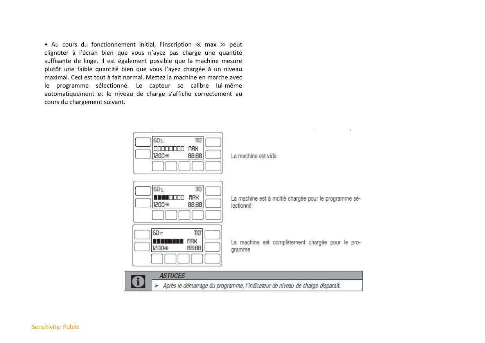
Sensitivity: Public• Au cours du fonctionnement initial, l’inscription ≪ max ≫ peutclignoter à l’écran bien que vous n’ayez pas charge une quantitésuffisante de linge. Il est également possible que la machine mesureplutôt une faible quantité bien que vous l'ayez chargée à un niveaumaximal. Ceci est tout à fait normal. Mettez la machine en marche avecleprogrammesélectionné.Lecapteursecalibrelui-mêmeautomatiquement et le niveau de charge s’affiche correctement aucours du chargement suivant.
12 / 20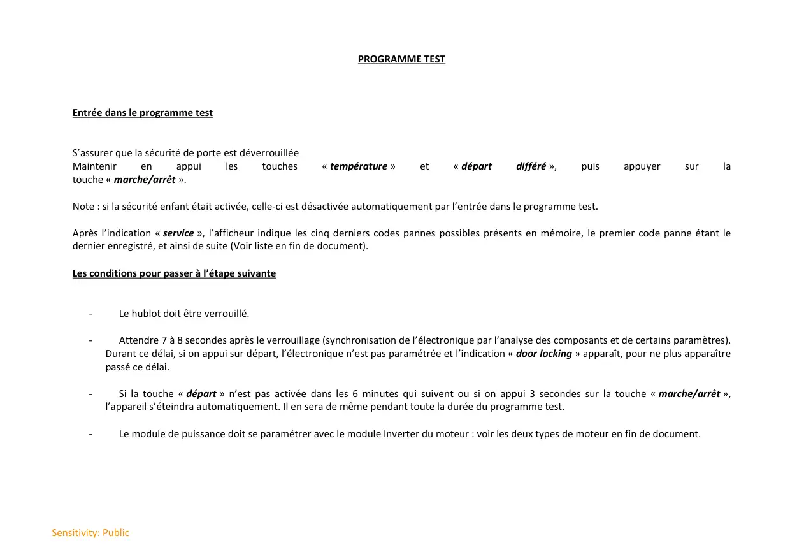
Sensitivity: PublicPROGRAMME TESTEntrée dans le programme testS’assurer que la sécurité de porte est déverrouilléeMaintenirenappuilestouches« température »et« départdifféré »,puisappuyersurlatouche « marche/arrêt ».Note : si la sécurité enfant était activée, celle-ci est désactivée automatiquement par l’entrée dans le programme test.Après l’indication « service », l’afficheur indique les cinq derniers codes pannes possibles présents en mémoire, le premier code panne étant ledernier enregistré, et ainsi de suite (Voir liste en fin de document).Les conditions pour passer à l’étape suivante-Le hublot doit être verrouillé.-Attendre 7 à 8 secondes après le verrouillage (synchronisation de l’électronique par l’analyse des composants et de certains paramètres).Durant ce délai, si on appui sur départ, l’électronique n’est pas paramétrée et l’indication « door locking » apparaît, pour ne plus apparaîtrepassé ce délai.-Si la touche « départ » n’est pas activée dans les 6 minutes qui suivent ou si on appui 3 secondes sur la touche « marche/arrêt »,l’appareil s’éteindra automatiquement. Il en sera de même pendant toute la durée du programme test.-Le module de puissance doit se paramétrer avec le module Inverter du moteur : voir les deux types de moteur en fin de document.
13 / 20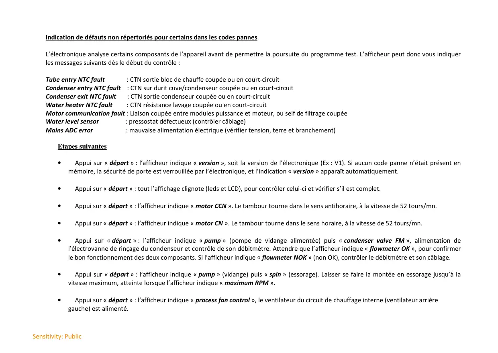
Sensitivity: PublicIndication de défauts non répertoriés pour certains dans les codes pannesL’électronique analyse certains composants de l’appareil avant de permettre la poursuite du programme test. L’afficheur peut donc vous indiquerles messages suivants dès le début du contrôle :Tube entry NTC fault : CTN sortie bloc de chauffe coupée ou en court-circuitCondenser entry NTC fault : CTN sur durit cuve/condenseur coupée ou en court-circuitCondenser exit NTC fault : CTN sortie condenseur coupée ou en court-circuitWater heater NTC fault : CTN résistance lavage coupée ou en court-circuitMotor communication fault : Liaison coupée entre modules puissance et moteur, ou self de filtrage coupéeWater level sensor : pressostat défectueux (contrôler câblage)Mains ADC error : mauvaise alimentation électrique (vérifier tension, terre et branchement)Etapes suivantes•Appui sur « départ » : l’afficheur indique « version », soit la version de l’électronique (Ex : V1). Si aucun code panne n’était présent enmémoire, la sécurité de porte est verrouillée par l’électronique, et l’indication « version » apparaît automatiquement.•Appui sur « départ » : tout l’affichage clignote (leds et LCD), pour contrôler celui-ci et vérifier s’il est complet.•Appui sur « départ » : l’afficheur indique « motor CCN ». Le tambour tourne dans le sens antihoraire, à la vitesse de 52 tours/mn.•Appui sur « départ » : l’afficheur indique « motor CN ». Le tambour tourne dans le sens horaire, à la vitesse de 52 tours/mn.•Appui sur « départ » : l’afficheur indique « pump » (pompe de vidange alimentée) puis « condenser valve FM », alimentation del’électrovanne de rinçage du condenseur et contrôle de son débitmètre. Attendre que l’afficheur indique « flowmeter OK », pour confirmerle bon fonctionnement des deux composants. Si l’afficheur indique « flowmeter NOK » (non OK), contrôler le débitmètre et son câblage.•Appui sur « départ » : l’afficheur indique « pump » (vidange) puis « spin » (essorage). Laisser se faire la montée en essorage jusqu’à lavitesse maximum, atteinte lorsque l’afficheur indique « maximum RPM ».•Appui sur « départ » : l’afficheur indique « process fan control », le ventilateur du circuit de chauffage interne (ventilateur arrièregauche) est alimenté.
14 / 20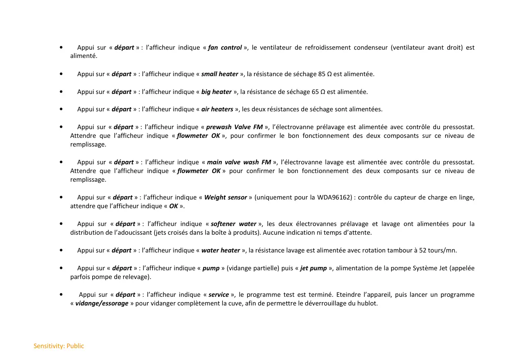
Sensitivity: Public•Appui sur « départ » : l’afficheur indique « fan control », le ventilateur de refroidissement condenseur (ventilateur avant droit) estalimenté.•Appui sur « départ » : l’afficheur indique « small heater », la résistance de séchage 85 Ω est alimentée.•Appui sur « départ » : l’afficheur indique « big heater », la résistance de séchage 65 Ω est alimentée.•Appui sur « départ » : l’afficheur indique « air heaters », les deux résistances de séchage sont alimentées.•Appui sur « départ » : l’afficheur indique « prewash Valve FM », l’électrovanne prélavage est alimentée avec contrôle du pressostat.Attendre que l’afficheur indique « flowmeter OK », pour confirmer le bon fonctionnement des deux composants sur ce niveau deremplissage.•Appui sur « départ » : l’afficheur indique « main valve wash FM », l’électrovanne lavage est alimentée avec contrôle du pressostat.Attendre que l’afficheur indique « flowmeter OK » pour confirmer le bon fonctionnement des deux composants sur ce niveau deremplissage.•Appui sur « départ » : l’afficheur indique « Weight sensor » (uniquement pour la WDA96162) : contrôle du capteur de charge en linge,attendre que l’afficheur indique « OK ».•Appui sur « départ » : l’afficheur indique « softener water », les deux électrovannes prélavage et lavage ont alimentées pour ladistribution de l’adoucissant (jets croisés dans la boîte à produits). Aucune indication ni temps d’attente.•Appui sur « départ » : l’afficheur indique « water heater », la résistance lavage est alimentée avec rotation tambour à 52 tours/mn.•Appui sur « départ » : l’afficheur indique « pump » (vidange partielle) puis « jet pump », alimentation de la pompe Système Jet (appeléeparfois pompe de relevage).•Appui sur « départ » : l’afficheur indique « service », le programme test est terminé. Eteindre l’appareil, puis lancer un programme« vidange/essorage » pour vidanger complètement la cuve, afin de permettre le déverrouillage du hublot.
15 / 20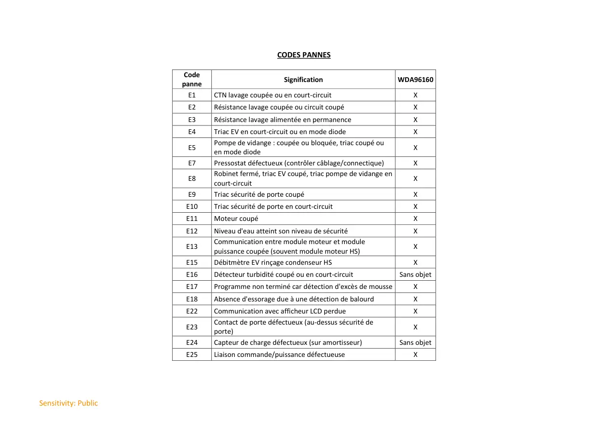
Sensitivity: PublicCODES PANNESCodepanneSignificationWDA96160E1CTN lavage coupée ou en court-circuitXE2Résistance lavage coupée ou circuit coupéXE3Résistance lavage alimentée en permanenceXE4Triac EV en court-circuit ou en mode diodeXE5Pompe de vidange : coupée ou bloquée, triac coupé ouen mode diodeXE7Pressostat défectueux (contrôler câblage/connectique)XE8Robinet fermé, triac EV coupé, triac pompe de vidange encourt-circuitXE9Triac sécurité de porte coupéXE10Triac sécurité de porte en court-circuitXE11Moteur coupéXE12Niveau d'eau atteint son niveau de sécuritéXE13Communication entre module moteur et modulepuissance coupée (souvent module moteur HS)XE15Débitmètre EV rinçage condenseur HSXE16Détecteur turbidité coupé ou en court-circuitSans objetE17Programme non terminé car détection d'excès de mousseXE18Absence d'essorage due à une détection de balourdXE22Communication avec afficheur LCD perdueXE23Contact de porte défectueux (au-dessus sécurité deporte)XE24Capteur de charge défectueux (sur amortisseur)Sans objetE25Liaison commande/puissance défectueuseX
16 / 20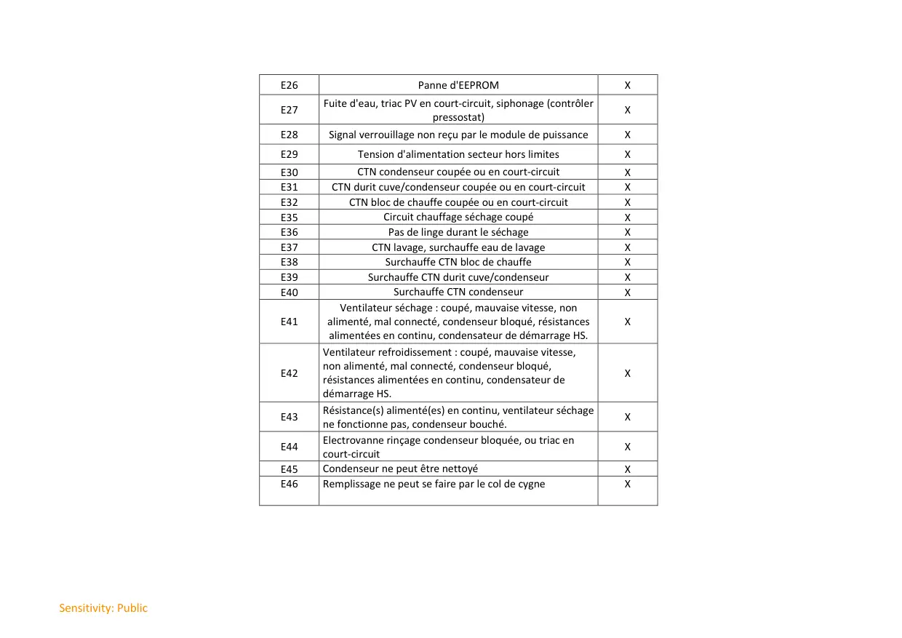
Sensitivity: PublicE26Panne d'EEPROMXE27Fuite d'eau, triac PV en court-circuit, siphonage (contrôlerpressostat)XE28Signal verrouillage non reçu par le module de puissanceXE29Tension d'alimentation secteur hors limitesXE30CTN condenseur coupée ou en court-circuitXE31CTN durit cuve/condenseur coupée ou en court-circuitXE32CTN bloc de chauffe coupée ou en court-circuitXE35Circuit chauffage séchage coupéXE36Pas de linge durant le séchageXE37CTN lavage, surchauffe eau de lavageXE38Surchauffe CTN bloc de chauffeXE39Surchauffe CTN durit cuve/condenseurXE40Surchauffe CTN condenseurXE41Ventilateur séchage : coupé, mauvaise vitesse, nonalimenté, mal connecté, condenseur bloqué, résistancesalimentées en continu, condensateur de démarrage HS.XE42Ventilateur refroidissement : coupé, mauvaise vitesse,non alimenté, mal connecté, condenseur bloqué,résistances alimentées en continu, condensateur dedémarrage HS.XE43Résistance(s) alimenté(es) en continu, ventilateur séchagene fonctionne pas, condenseur bouché.XE44Electrovanne rinçage condenseur bloquée, ou triac encourt-circuitXE45Condenseur ne peut être nettoyéXE46Remplissage ne peut se faire par le col de cygneX
17 / 20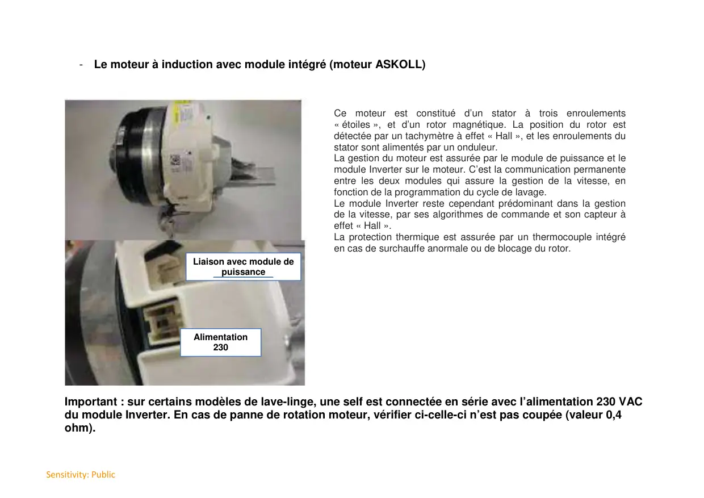
Sensitivity: Public- Le moteur à induction avec module intégré (moteur ASKOLL)Important : sur certains modèles de lave-linge, une self est connectée en série avec l’alimentation 230 VACdu module Inverter. En cas de panne de rotation moteur, vérifier ci-celle-ci n’est pas coupée (valeur 0,4ohm).Ce moteur est constitué d’un stator à trois enroulements« étoiles », et d’un rotor magnétique. La position du rotor estdétectée par un tachymètre à effet « Hall », et les enroulements dustator sont alimentés par un onduleur.La gestion du moteur est assurée par le module de puissance et lemodule Inverter sur le moteur. C’est la communication permanenteentre les deux modules qui assure la gestion de la vitesse, enfonction de la programmation du cycle de lavage.Le module Inverter reste cependant prédominant dans la gestionde la vitesse, par ses algorithmes de commande et son capteur àeffet « Hall ».La protection thermique est assurée par un thermocouple intégréen cas de surchauffe anormale ou de blocage du rotor.Alimentation230Liaison avec module depuissance
18 / 20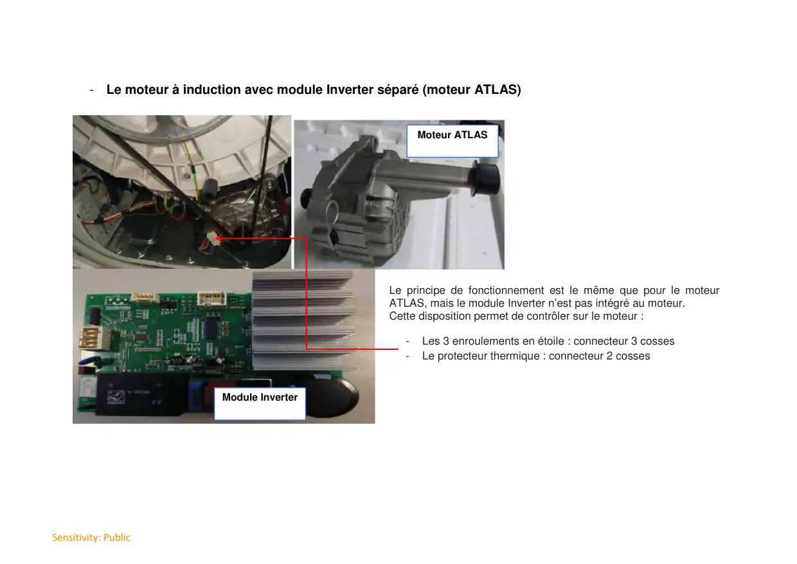
Sensitivity: Public- Le moteur à induction avec module Inverter séparé (moteur ATLAS)Le principe de fonctionnement est le même que pour le moteurATLAS, mais le module Inverter n’est pas intégré au moteur.Cette disposition permet de contrôler sur le moteur :-Les 3 enroulements en étoile : connecteur 3 cosses-Le protecteur thermique : connecteur 2 cossesMoteur ATLASModule Inverter
19 / 20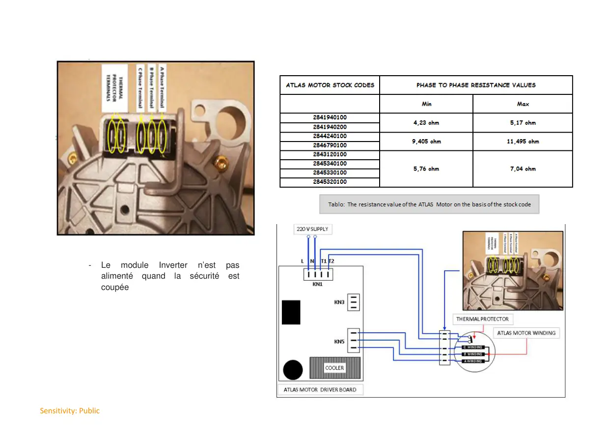
Sensitivity: Public-LemoduleInvertern’estpasalimenté quand la sécurité estcoupée
20 / 20